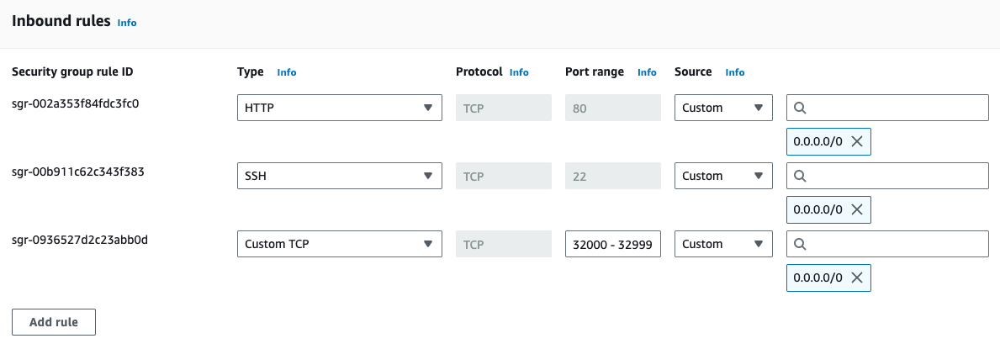
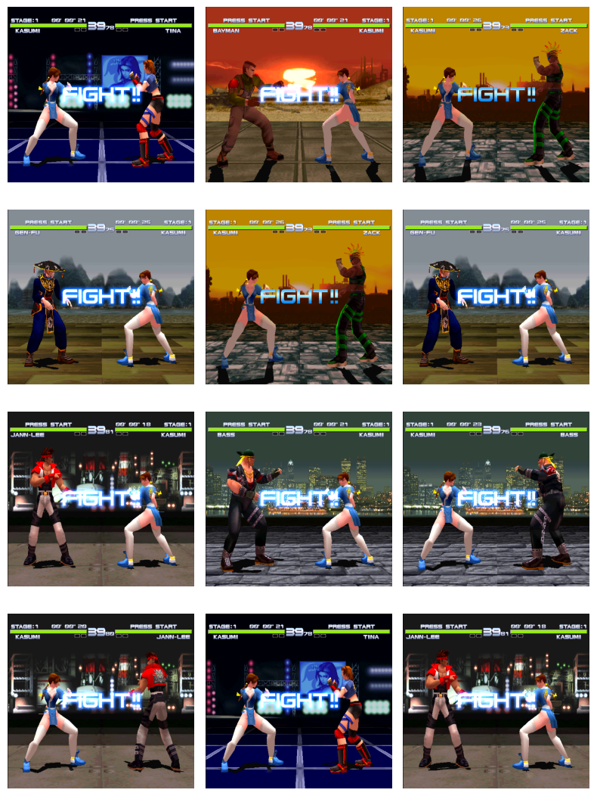

SAD TIMES SPOILER: There is no expert agent at the end of this blog post, really its mostly about interfacing between multiple docker containers running on an EC2 instance and Google Colab. See the example notebook here.
Diambra is a framework for training reinforcement learning agents on classic video games. In my exploration of the project, I found myself needing a gpu to train CNN based policies and value function approximators. Enter Google Colab, where you can get access to an A100 GPU for 10 bucks a month (granted you probably only have ~20 hours of training on an A100 with your monthly credits before needing to top up). I decided to give this a try since Colab is a nice way to share solutions.
Immediately there was a problem: Diambra is run with Docker containers, and running these containers on Google Colab is, in my investigations, not well supported/hacky. My solution was to attempt to run the containers on a separate machine, accessible by the Colab instance. The Colab instance would then send actions to the Diambra container over HTTPS, and receive observations and rewards in return. As we’ll see, this solution runs into some issues, hopefully solvable by someone reading this!
Single Environment Setup
First lets see how to get the simplest setup working: 1 container on a remote machine, accessed from Google Colab. The remote machine I used was an AWS EC2 instance.
Set up an EC2 instance
We need an ec2 instance to host our containers. It does not have to be beefy, just have enough memory to run some docker containers. I started with a t2.micro running AWS Linux, but we’ll have to spin up more . For a tutorial on how to create/connect to an ec2 instance via SSH, see this tutorial.
Once you are up and running and connected, we need to install docker. See this AWS documentation. In short, we run:
# install docker
sudo yum update -y
sudo yum install -y docker
# start the docker daemon
sudo service docker start
# add the ec2-user to the docker group so you dont have to do sudo docker commands
sudo usermod -a -G docker ec2-userCheck that docker works with docker run hello-world or docker ps.
Add a Security Group
I am about to give you some advice that is probably bad, which is to allow all traffic on ports 32000-32999 on your ec2 instance. Under the ‘Security’ tab of your ec2 instance, there should be at least one listed security group. Click on that security group, go to the groups inbound rules and ‘Edit inbound rules’. You should see a screen with an option to ‘Add rule’. The rule we want to add is a Custom TCP rule on ports 32000 - 32999 as shown below:

Do this same thing for the outbound rules, as we will be passing data to and receiving data from the running containers on the ec2 instance.
Install Diambra
This setup is exactly like in the Diambra installation docs and the vanilla ec2 instance should have all you need to install diambra. You will, as with running locally, need a copy of a compatible ROM (I use DOA++ in this example). You can copy this to the ec2 instance with scp or rsync from your local machine:
scp -i ~/.ssh/my-key.pem /path/to/doapp.zip <ec2-public-ip>:<ec2-roms-path>Run a Diambra Container
And then specify the roms path as usual in the ec2 instance with the DIAMBRAROMSPATH environment variable.
We can run a single diambra container with:
[ec2-user]$ diambra arena --path.roms /path/to/roms --env.host 0.0.0.0 up
🖥️ logged in
v2.2: Pulling from diambra/engine
Digest: sha256:77ba99e5d7d099fe2db292fc7b4e43da310e1bbdb0bcc3a157810e1f933ec81d
Status: Image is up to date for diambra/engine:v2.2
Stored credentials found.
Authorization granted.
Server listening on 0.0.0.0:50051
127.0.0.1:32768Make note of the port it is running on, this will be in the range 32000-32999.
We can see the running container with:
[ec2-user]$ docker ps
CONTAINER ID IMAGE COMMAND CREATED STATUS PORTS NAMES
7bf96960255f diambra/engine:v2.2 "/bin/diambraEngineS…" 8 seconds ago Up 6 seconds 0.0.0.0:32768->50051/tcp busy_villaniConnect From Colab
From colab, we can connect using the diambra api. We will need the ec2 instances IPv4 address/IPv4 DNS. These can be obtained from the main page of your ec2 instance in the AWS console.
import diambra.arena
from diambra.arena import EnvironmentSettings
#
os.environ['DIAMBRA_ENVS'] = "your-ec2-ipv4-address:port"
settings = EnvironmentSettings(
difficulty=2,
splash_screen=False
)
env = diambra.arena.make("doapp", render_mode='rgb_array', env_settings=settings)
env.reset()
act = env.action_space.sample()
state, reward, done, truncated, info = env.step(act)If we take a look at the state we see the start screen of a fight inside DOA++:
Now you have the ability to run a training loop or pass your environment object to e.g. stable-baselines.
Connect to Multiple Environments
Just one problem…there is a bit of latency between sending the action to the ec2 instance, and receiving the observations, rewards, etc. back. It’s not much for a single ping, but we’re talking about training an RL agent, requiring millions of agent-environment interactions, and if you add 30ms to every single interaction you can imagine the training is gonna be very slow.
No problem, lets spin up a bunch of containers and call them in parallel! How do we do this? Well, basically we need to create a class that spins up multiple environments and calls them all at once. Thanks to @lwneal on github for this example which was basically the template for what follows. We essentially have a function that executes multiple commands from an iterable and then use that for our environment’s reset() and step() functions. See the colab notebook for the code and below for an example of 12 observations pulled from 12 environments running in an ec2 instance:

Great! There are still some hurdles to jump over however. Remember these are 12 different environments being sampled from, we cant just mix the observations from all of them. Instead, we have to keep track of things like states, rewards, etc. on a per-environment basis. Something like below:
# store running episodes for each parallel environment
obs_list = [[] for _ in range(len(env.envs))]
act_list = [[] for _ in range(len(env.envs))]
rew_list = [[] for _ in range(len(env.envs))]
val_list = [[] for _ in range(len(env.envs))]
log_prob_list = [[] for _ in range(len(env.envs))]
done_list = [[] for _ in range(len(env.envs))]
truncated_list = [[] for _ in range(len(env.envs))]
discounted_rewards = [[] for _ in range(len(env.envs))]For example, in PPO, we have to complete a few episodes, compute discounted rewards and advantages, and then form training tuples. We don’t want to just wait til a few episodes are complete, update the policy/value function, and then continue, since then the episodes that did not get used since they did not complete will not reflect the current policy.
Further, this process is…..still kinda slow. Colab is a great tool, but this might not be the use case for it (we dont really need that A100), and the cost of spinning up an ec2 instance with a GPU might be worth having the environment running on the same machine that is doing the training and seriously reduce latency issues. I’ll probably give a go at actually training a fighter all on an ec2 instance since, well, I want to actually get this working and I’ve been making some mistakes in training previous PPO agents (incoming amendments to previous posts).